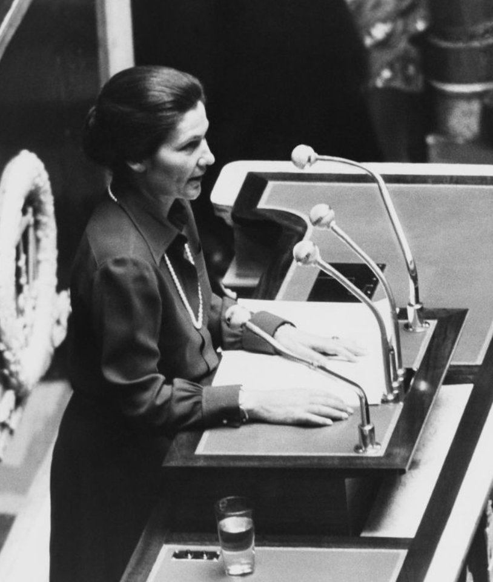

STYLE & HOMMAGE
L’Influence, l'Inspiration et l'Émancipation féminine
Leur influence restera à jamais ancrée dans notre monde, indélébile, même face à la mort. Qui pourrait avouer n’avoir jamais été inspiré par le caractère rebelle à l’aspect provocateur de la princesse Diana ? Et qui n’a jamais succombé au glamour et à la sensualité de l’énigmatique muse d’Hollywood ? Autant décréter que ces âmes duchesses se sont bien décidées à laisser une empreinte indélébile dans l’histoire, juste avant de quitter la scène de la vie. Et chacune l’ont fait en beauté. Aujourd’hui encore, nous évoluons en ne cessant de refaire vivre leur identité. Madame Veil ouvrit les portes de l’émancipation à toutes les femmes de France, leur offrant ainsi la possibilité de disposer librement de leur propre corps. Son esprit digne et son humanisme ne cessera de vibrer dans tous les cœurs de ceux qui souhaitent, ou plutôt de ceux qui aspirent à une vie marquée de progrès social. Je pourrais interroger des milliers de femmes et de jeunes filles qui vous diront qu’à un moment dans leur vie, Simone Veil a été un modèle de courage et d’émancipation, et qu’elle continuera d’inspirer les générations futures à travers ses nombreux combats. D’une pionnière à une autre, Lady Diana de son nom de jeune fille Diana Spencer, nous aura sans doute marqué au fer rouge de sa grâce, de son élégance mais surtout de sa vulnérabilité. À une époque où je ne savais pas qu’une véritable princesse pouvait s’adonner au militantisme, Diana, à travers de nombreux documentaires, photos, interviews et gestes, mais surtout à travers son regard, a tout à fait su nous le démontrer. Comment peut-on être à la fois une princesse du peuple, une mère dévouée, une héroïne du quotidien et un emblème de la philanthropie ? Malgré cela, son besoin de révolte et de rébellion, comme elle l’a si bien exprimé avec sa ‘Revenge dress’ — qui restera gravée dans nos esprits — l’a conduite jusqu’à sa tragique fin, plongeant le monde entier dans une profonde désolation.
Faut retenir que même la personne la plus vulnérable sur Terre peut avoir un impact important sur le monde, car il faut avoir le courage d’agir, de mener, de diriger et d’inspirer, quelle que soit notre prison intérieure. Sans plus tarder, il nous faut absolument discuter de l’influence sur la mode qu’ont pu apporter Marilyn Monroe et Audrey Hepburn, et comment le monde entier a succombé au glamour et à l’élégance d’Hollywood, à une époque où Hollywood n’avait encore jamais mis un seul pied dans le milieu de la mode et surtout de la Haute Couture. La plus sensuelle des blondes du cinéma a mené un combat acharné pour enfin pénétrer le milieu du cinéma, puis d’Hollywood. Je pense que c’est de la persévérance et de la résilience de Norma Jeane Baker dont nous avons besoin de nous inspirer aujourd’hui. Mais à travers les caméras des paparazzis, c’est l’image d’une femme sensuelle, magnétique et fragile, qui fut l’objet du désir des hommes et qui inspira, aujourd’hui encore, le glamour d’Hollywood dont on se souviendra — en surface. Sa personnalité complexe, son image de femme fatale et ses relations médiatisées ont fait d’elle un sex-symbol. Et sans un destin tragique, son histoire n’aurait probablement pas pris la dimension d'icône inoubliable qu’elle a aujourd'hui. C’est en plein dans les années 1950 et 1960 qu’Audrey Hepburn éblouit nos écrans avec son image qui nous inspire la féminité et la douceur. Égérie de Givenchy, la femme qu’est Audrey aspire à la noblesse et à la sensibilité. Si avec Marilyn nous avons eu une image de sex-symbol, avec Audrey il n’y a que la beauté naturelle et sa modestie qui ont fait de son charme ce qu’il en était. Certains qualifieront son visage de la plus irrésistible des petites souris, comme dans son film “Funny Face”. Comme toute fan de Diamants sur canapé, j'ai eu cette fameuse affiche du film avec Audrey, vêtue d'une somptueuse robe noire Givenchy, son collier de perles et sa cigarette à la main. Il y a tant de portraits de femmes dont on puise notre inspiration, qu’elles soient militantes, femmes politiques, actrices, mères, dont il faudrait parler, encore et toujours. Soyez cette femme de votre vie.
 Il y a tant de portraits de femmes dont on puise notre inspiration, qu’elles soient , militantes, femmes politiques, actrices, mères, dont il faudrait parler, encore et toujours. Soyez cette femme de votre vie.
Il y a tant de portraits de femmes dont on puise notre inspiration, qu’elles soient , militantes, femmes politiques, actrices, mères, dont il faudrait parler, encore et toujours. Soyez cette femme de votre vie.